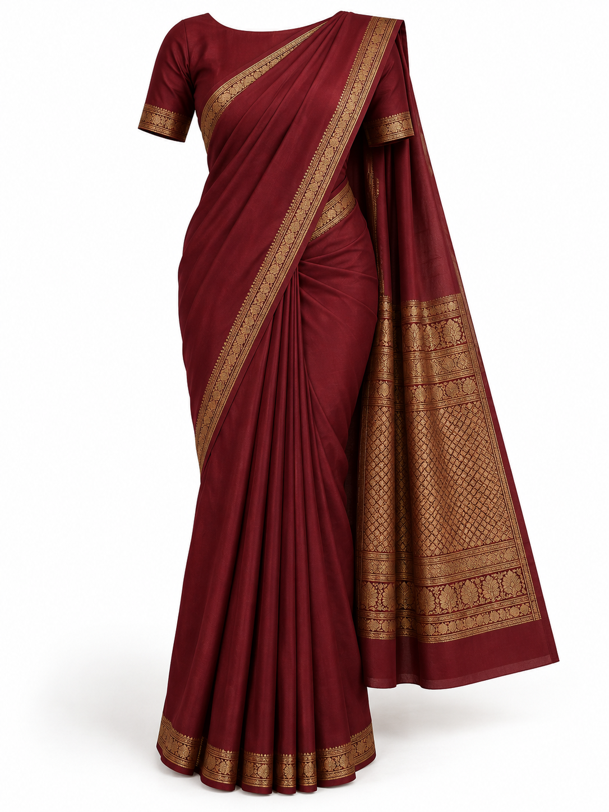
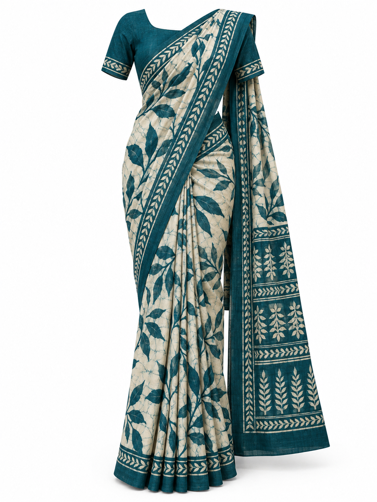
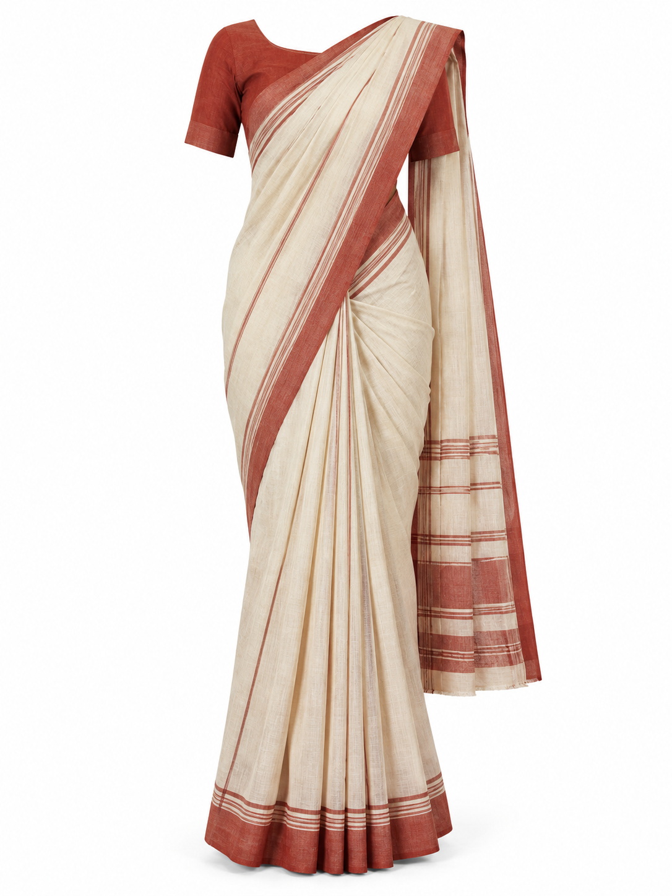
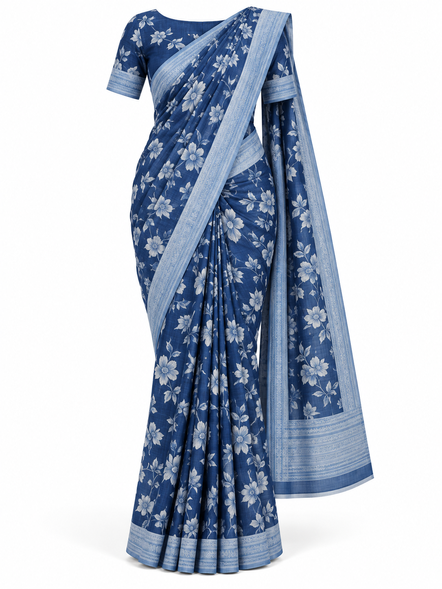
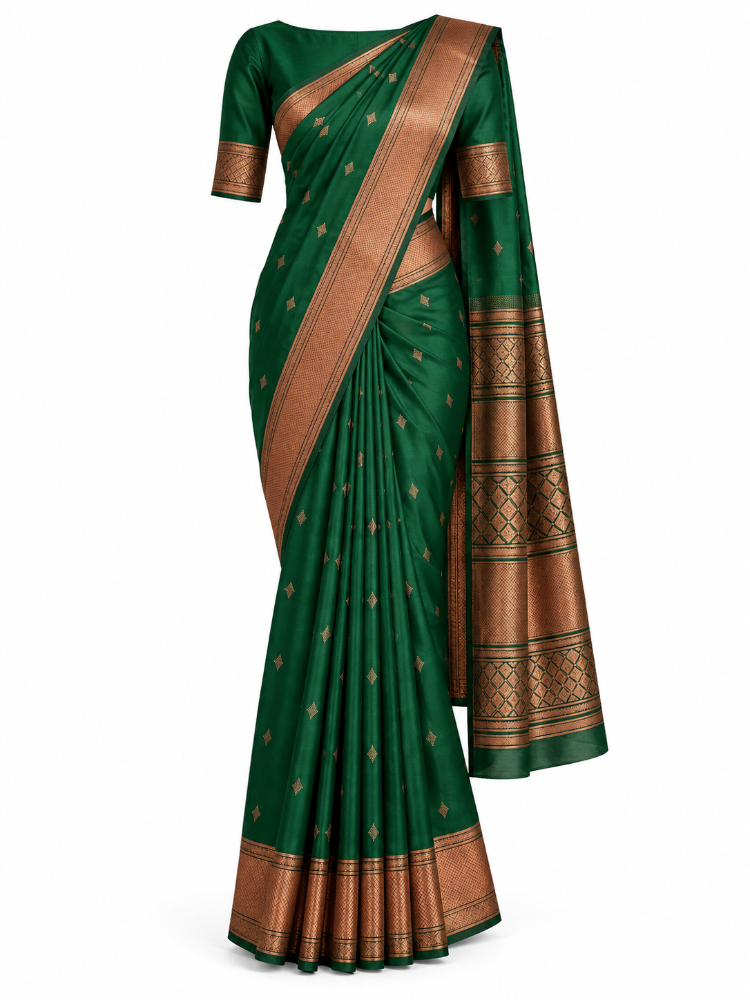

Synthetic draped garment references for experimental try-on testing. Conventional saree drapes, not Kandyan/Osariya references. Click an image to open the full-resolution PNG.





Select Saree in the app, use a full-body portrait, and review that the mask includes the full skirt and shoulder drape. These references do not establish model accuracy.